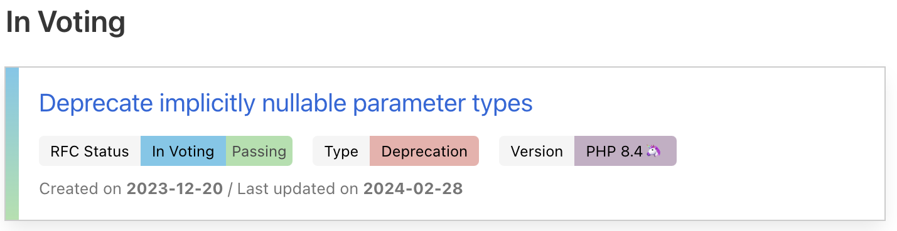
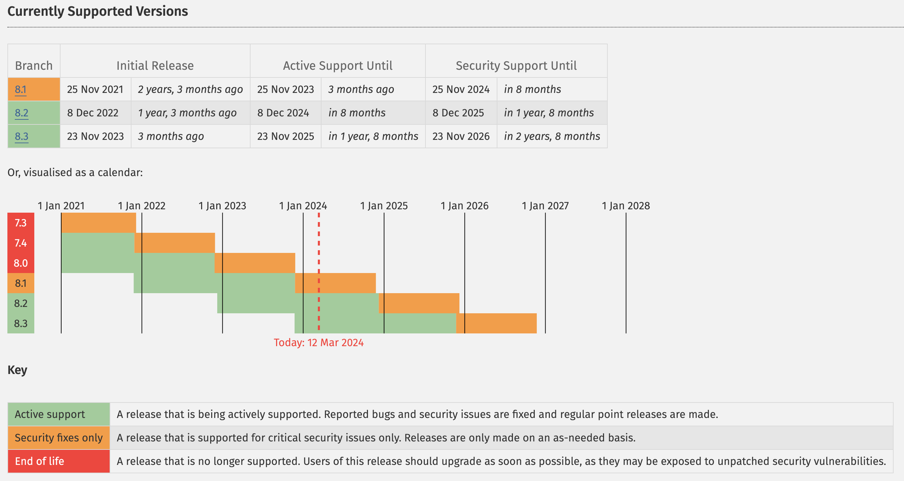

Meetup AFUP
Mars 2024
- Association créée en 2001 pour promouvoir PHP et son écosystème
- Organise des conférences (Forum PHP, AFUP Day)
- environ 15 antennes dans toute la France
- afup.org/association/antennes
- Meetup tous les mois ⏰
- Du PHP et son environnement
- Et avec des apéros ! 🍻
Nous aider ?
- Speakers ! ⚠️
- Locaux
- Sponsoring (manger && boire)
Actu locale
- ServerLess : du monolithe au microservice sur Kubernetes - Cloud Opensource - 21 mars
- Software Crafters Paris - 20 mars
- Paris.JS - 27 mars
Actu AFUP

AFUP Day 2024

- Vendredi 24 mai 2024
- Nancy / Poitiers / Lille / Lyon
Billets en vente - Nancy sold out
(JDLL - Journées Du Logiciel Libre - les deux jours suivants à Lyon)
À venir en PHP 8.4

Versions

Le buzz
PECL, Composer... On en sait plus !
Aujourd'hui !
Conférences
- "Debugguez votre salaire ! Mes stratégies gagnantes pour réussir sa négociation salariale !" par Shirley Almosni Chiche
- "GRPC en PHP" par Maxime Veber
Et pour finir
Hébergement et apéro offert par